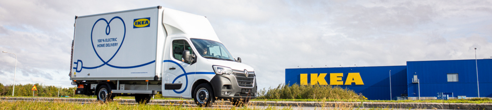

Background
Over the last couple of years shopping habits changed significantly. Not only with the ongoing pandemic, but already before, new ways of shopping manifested themselves.
The evolvement of new technologies, such as smartphones and mobile internet, placed increased demands on stationary retail.
Flexibility, lower pricing, convenience to select products from consumer's home and 24/7 shopping are primary advantages offered to customers online.
Consumers expect more
With the rise of online shopping, brick and mortar retailers were challenged to reconsider their bulletproof offline selling strategies.
Millenials and Generation-Z shoppers became a significant target audience, focusing on online shopping rather than visiting physical stores.
To stay competitive and become attractive to them, an all-in one shopping experience needed to be developed =>
the birth of multichannel/omnichannel concepts.
Rising expectations of modern consumers required IT systems and infrastructure to adapt.
Cost and process-optimized merchandise management has been and still is key to a flexible business model and profitable long-term strategy.
The larger the retailer, the higher expectations by consumers.
Online product information, social media presence, click & collect solutions contribute essentially to trust and loyalty.
... and then there was Year 2020 turning the world upside-down with its COVID-19 pandemic ...
The world either accelerated or almost stood completely still. In both cases quick reaction was required.
With repeadily arranged lockdowns in many countries, online shopping has been and is the only choice for consumers to satisfy their needs in buying new products. Therefore, not only younger generations are taking advantage of the wide range availability in online stores, but also older demographics are switching rapidly.
Global trend reports unveil that COVID-19 accelerated four key trends during 2020.
- Trend 1: Evolvement of Business models
- Even before COVID-19, physical stores clearly have passed their zenith. The days of being able to achieve business growth through offline purchase only are over. Business needs to transform.
- Trend 2: Purpose before Profit
- Companies are starting to put people ahead of profits. A study in late 2018 showed a trend that people either buy or boycott a retailer based on its social position. The global opinion about retailers matter.
- Trend 3: Costs as key to success
- Conventional form of cost cutting is not enough to succeed in increasing the profit. With impact of COVID-19 businesses will have an increased challenge returning back to profitable business.
- Trend 4: Customers on the rise
- Today's environment shows that consumers lead and care more about availability than assortment. Retailers knowing their customer's habits and needs clearly succeed better.
By analysing above figures, physical retail will need to offer their customers new reasons to purchase offline. With price and convenience being key to customer's decision making on where to purchase, retailers need to develop their online and last mile logistics to manage the balance between home delivery and in-store product ranges.
Purpose of Customer Fulfilment Backbone (CFB)

Consumers purchase goods 24/7. Selections and orders can be made whenever and wherever it feels convenient to them.
To show realtime values and quality to consumers a smart stock calculation and delivery routing, by optimizing the availablity of products, is required.
Customer fulfilment backbone is a combination of several systems and related ways of working that form the engine behind fulfilling customers oders.
CFB's intelligent business logic combines many different IT systems and contributes to a trouble-free execution of the order process for both consumers and co-workers.
It optimizes the stock availability, automates picking and speeds up the delivery process. Depending on customers postcode and availability of the ordered goods, the system evaluates the best delivery process.
In addition to an optimized delivery process, consumers get enhanced possiblities on whether to pick up their products at a pickup point or get them delivered to their home.
Scope of transformation
Complextity of the solution, expectation of both global teams and local market required high alert and engagement from all involved stakeholders.
Fast changing requirements due to COVID-19 governmental decisions called for an even faster implemenation of the new solution.
Awareness sessions, communication, trainings, configurations, business- and IT testing, piloting, after care and rollout involved many stakeholders and different teams.
During winter 2019 until spring 2021 about 340 stores in 30 countries have been successfully equipped with the optimized business flows.
Scope of my deliverables
In my current role I lead the implementation of CFB 1.3.0/1.3.2 as part of the BCI team by being the link between Business and IT, securing Business and IT configurations as well as
TSP (Transport Service Provider) readiness for CFB 1.3.2 (order orchestration) launch.
Working closely with BI (Business Implementation) Team, IT teams and Centiro, I am/was responsible for UK/IE, DE, AT, PL, NL, CH, CN, CZ, HU and SK.
Currently working with CZ, HU and SK and CN as all other countries successfully rolled out CFB 1.3.2 by now.